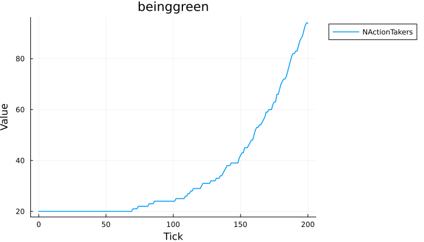
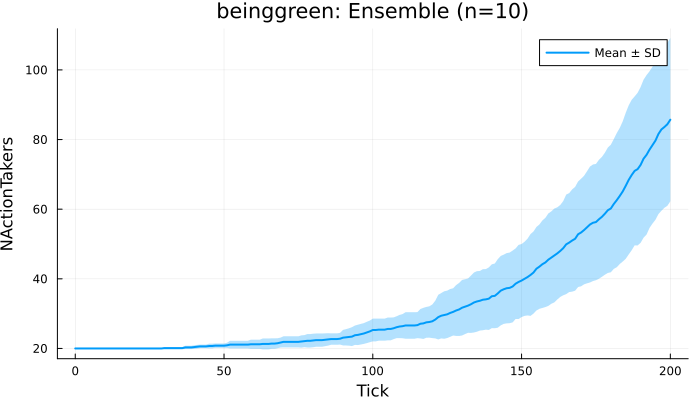
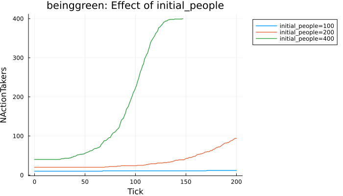

Being Green
Overview
This vignette demonstrates the Being Green model implemented in ArkModelZoo.jl using the Ark.jl ECS framework.
Parameters
| Parameter | Type | Default | Description |
|---|---|---|---|
initial_people | Int | 200 | initial people |
average_locus_of_control | Float64 | 50.0 | average locus of control |
average_social_pressure | Float64 | 50.0 | average social pressure |
average_sense_of_responsibility | Float64 | 50.0 | average sense of responsibility |
average_pbc | Float64 | 20.0 | average pbc |
initial_action_taker_frac | Float64 | 0.10 | initial action taker frac |
grid_width | Int | 33 | grid width |
grid_height | Int | 33 | grid height |
max_ticks | Int | 200 | max ticks |
Source Code
The Julia code to run this model:
using ArkModelZoo
_, trajectory = run_beinggreen()Time Series

Ensemble Runs
Ten replicates with different random seeds, showing mean ± standard deviation.

Parameter Sensitivity
Varying initial_people.

Appendix: Source Code
This model is implemented in the Ark.jl Entity-Component-System (ECS) framework. The code is split into five files, each with a distinct role:
- Parameters: a mutable struct holding all configurable values.
- Components: lightweight data types attached to individual entities (agents).
- Resources: world-level shared state accessible to all systems.
- Systems: functions that operate on entities each tick, defining model behavior.
- Model: wiring that assembles the world, registers resources and systems, and provides the run entry point.
Parameters (parameters.jl)
The parameter struct uses @kwdef so that every field has a default value and can be overridden by keyword. These defaults match the original NetLogo model’s slider settings.
Base.@kwdef mutable struct BeingGreenParams
initial_people::Int = 200
average_locus_of_control::Float64 = 50.0
average_social_pressure::Float64 = 50.0
average_sense_of_responsibility::Float64 = 50.0
average_pbc::Float64 = 20.0
initial_action_taker_frac::Float64 = 0.10
grid_width::Int = 33
grid_height::Int = 33
max_ticks::Int = 200
seed::Int = 42
endComponents (components.jl)
Components are lightweight data types attached to individual entities (agents). Mutable structs hold per-entity state, while empty tag structs act as markers for the ECS query system to efficiently filter entities.
mutable struct GreenPosition
x::Float64
y::Float64
end
GreenPosition() = GreenPosition(0.0, 0.0)
mutable struct GreenHeading
heading::Float64
end
GreenHeading() = GreenHeading(0.0)
mutable struct ActionTaker
is_action_taker::Bool
end
ActionTaker() = ActionTaker(false)
mutable struct GreenProperties
locus_of_control::Float64
sense_of_responsibility::Float64
pbc::Float64
social_pressure::Float64
end
GreenProperties() = GreenProperties(0.0, 0.0, 0.0, 0.0)Resources (resources.jl)
Resources are world-level singletons shared across all systems, used for global state and aggregate statistics.
mutable struct BeingGreenGrid
width::Int
height::Int
cells::Matrix{Vector{Entity}}
end
function BeingGreenGrid(w::Int, h::Int)
cells = [Entity[] for _ in 1:w, _ in 1:h]
BeingGreenGrid(w, h, cells)
end
function clear_grid!(grid::BeingGreenGrid)
for col in grid.cells
empty!(col)
end
end
function pos_to_cell(x::Float64, y::Float64, w::Int, h::Int)
gx = mod1(round(Int, x), w)
gy = mod1(round(Int, y), h)
return gx, gy
end
mutable struct BeingGreenStats
n_action_takers::Int
end
BeingGreenStats() = BeingGreenStats(0)Systems (systems.jl)
Systems contain the model logic and execute in a defined order each tick. Each system struct implements either initialize! (run once at setup) or update! (run every tick).
# --- Helpers ---
function _green_wrap(v::Float64, span::Int)
return mod(v - 0.5, Float64(span)) + 0.5
end
function _green_move!(rng, pos::GreenPosition, hdg::GreenHeading, w::Int, h::Int)
hdg.heading = mod(hdg.heading + rand(rng) * 360.0, 360.0)
θ = deg2rad(hdg.heading)
pos.x = _green_wrap(pos.x + sin(θ), w)
pos.y = _green_wrap(pos.y + cos(θ), h)
end
function _rebuild_grid!(world::World, grid::BeingGreenGrid)
clear_grid!(grid)
w, h = grid.width, grid.height
for (eids, positions) in Query(world, (GreenPosition,))
@inbounds for i in eachindex(eids)
gx, gy = pos_to_cell(positions[i].x, positions[i].y, w, h)
push!(grid.cells[gx, gy], eids[i])
end
end
end
# --- Initialization ---
struct InitBeingGreenSystem <: System end
function initialize!(::InitBeingGreenSystem, world::World)
params = get_resource(world, BeingGreenParams)
rng = get_resource(world, RNGResource).rng
stats = get_resource(world, BeingGreenStats)
grid = get_resource(world, BeingGreenGrid)
w, h = params.grid_width, params.grid_height
n_at = 0
for who in 0:(params.initial_people - 1)
x = rand(rng) * w + 0.5
y = rand(rng) * h + 0.5
is_at = who < round(Int, params.initial_people * params.initial_action_taker_frac)
loc = randn(rng) * 10.0 + params.average_locus_of_control
sor = randn(rng) * 10.0 + params.average_sense_of_responsibility
pbc = randn(rng) * 10.0 + params.average_pbc
sp = randn(rng) * 10.0 + params.average_social_pressure
new_entity!(world, (
GreenPosition(x, y),
GreenHeading(0.0),
ActionTaker(is_at),
GreenProperties(loc, sor, pbc, sp),
))
if is_at; n_at += 1; end
end
stats.n_action_takers = n_at
_rebuild_grid!(world, grid)
return nothing
end
# --- Move All Turtles ---
struct MoveBeingGreenSystem <: System end
function update!(::MoveBeingGreenSystem, world::World)
rng = get_resource(world, RNGResource).rng
grid = get_resource(world, BeingGreenGrid)
w, h = grid.width, grid.height
# Collect and shuffle for random order
agents = Tuple{GreenPosition, GreenHeading}[]
for (_, positions, headings) in Query(world, (GreenPosition, GreenHeading))
@inbounds for i in eachindex(positions)
push!(agents, (positions[i], headings[i]))
end
end
order = randperm(rng, length(agents))
for idx in order
pos, hdg = agents[idx]
_green_move!(rng, pos, hdg, w, h)
end
_rebuild_grid!(world, grid)
return nothing
end
# --- Interact ---
# Action-takers influence non-action-takers on neighboring patches.
struct InteractBeingGreenSystem <: System end
function update!(::InteractBeingGreenSystem, world::World)
rng = get_resource(world, RNGResource).rng
grid = get_resource(world, BeingGreenGrid)
w, h = grid.width, grid.height
# Cache boolean flags before any modifications this tick.
# NetLogo's susceptible?/internal?/responsible? are set by evaluate-parameters
# at the END of each tick and remain stale throughout the next tick's influence.
cached_flags = Dict{Entity, Tuple{Bool, Bool, Bool}}()
for (eids, ats, props_arr) in Query(world, (ActionTaker, GreenProperties))
@inbounds for i in eachindex(eids)
if !ats[i].is_action_taker
p = props_arr[i]
cached_flags[eids[i]] = (
p.social_pressure > 70,
p.locus_of_control > 70,
p.sense_of_responsibility > 70,
)
end
end
end
# Collect action-taker positions
at_list = Tuple{Entity, Int, Int}[]
for (eids, positions, ats) in Query(world, (GreenPosition, ActionTaker))
@inbounds for i in eachindex(eids)
if ats[i].is_action_taker
gx, gy = pos_to_cell(positions[i].x, positions[i].y, w, h)
push!(at_list, (eids[i], gx, gy))
end
end
end
Random.shuffle!(rng, at_list)
for (_, gx, gy) in at_list
# Collect non-action-taker entities on 8 neighboring patches
nearby_red = Entity[]
for dx in -1:1, dy in -1:1
(dx == 0 && dy == 0) && continue
nx = mod1(gx + dx, w)
ny = mod1(gy + dy, h)
for eid in grid.cells[nx, ny]
at = get_components(world, eid, (ActionTaker,))[1]
if !at.is_action_taker
push!(nearby_red, eid)
end
end
end
isempty(nearby_red) && continue
Random.shuffle!(rng, nearby_red)
for eid in nearby_red
props = get_components(world, eid, (GreenProperties,))[1]
pos = get_components(world, eid, (GreenPosition,))[1]
hdg = get_components(world, eid, (GreenHeading,))[1]
susceptible, internal, responsible = cached_flags[eid]
if !susceptible
props.social_pressure += 1
elseif !internal
props.pbc += 5
props.locus_of_control += 1
elseif !responsible
props.pbc += 5
props.sense_of_responsibility += 5
else
props.pbc += 5
end
# Influenced turtle moves
old_gx, old_gy = pos_to_cell(pos.x, pos.y, w, h)
_green_move!(rng, pos, hdg, w, h)
new_gx, new_gy = pos_to_cell(pos.x, pos.y, w, h)
if old_gx != new_gx || old_gy != new_gy
filter!(e -> !isequal(e, eid), grid.cells[old_gx, old_gy])
push!(grid.cells[new_gx, new_gy], eid)
end
end
end
return nothing
end
# --- Test ---
struct TestBeingGreenSystem <: System end
function update!(::TestBeingGreenSystem, world::World)
for (_, ats, props_arr) in Query(world, (ActionTaker, GreenProperties))
@inbounds for i in eachindex(ats)
if !ats[i].is_action_taker
p = props_arr[i]
if p.locus_of_control > 70 && p.sense_of_responsibility > 70 && p.pbc > 70
ats[i].is_action_taker = true
end
end
end
end
return nothing
end
# --- Termination ---
struct BeingGreenTerminationSystem <: System end
function update!(::BeingGreenTerminationSystem, world::World)
params = get_resource(world, BeingGreenParams)
stats = get_resource(world, BeingGreenStats)
tick = get_resource(world, Tick)
n_at = 0
n_total = 0
for (_, ats) in Query(world, (ActionTaker,))
@inbounds for i in eachindex(ats)
n_total += 1
if ats[i].is_action_taker
n_at += 1
end
end
end
stats.n_action_takers = n_at
if n_at == n_total || tick.tick + 1 >= params.max_ticks
get_resource(world, Terminate).stop = true
end
return nothing
endModel (model.jl)
The model file assembles all pieces: it creates the ECS World with the required component types, registers resources, builds the Scheduler with systems in execution order, and exposes the public run entry point. The observer pattern records the trajectory each tick.
function beinggreen_world(; initial_capacity::Int = 512)
return World(
GreenPosition,
GreenHeading,
ActionTaker,
GreenProperties;
initial_capacity = initial_capacity,
allow_mutable = true,
)
end
function beinggreen_systems()
return (
InitBeingGreenSystem(),
MoveBeingGreenSystem(),
InteractBeingGreenSystem(),
TestBeingGreenSystem(),
BeingGreenTerminationSystem(),
)
end
function beinggreen_model(params::BeingGreenParams = BeingGreenParams())
world = beinggreen_world()
_add_standard_resources!(world, params)
add_resource!(world, BeingGreenGrid(params.grid_width, params.grid_height))
add_resource!(world, BeingGreenStats())
scheduler = Scheduler(world, beinggreen_systems())
initialize!(scheduler)
return scheduler
end
struct BeingGreenObserver end
function beinggreen_headers(::BeingGreenObserver)
return ["NActionTakers"]
end
function beinggreen_values(::BeingGreenObserver, world::World)
stats = get_resource(world, BeingGreenStats)
return Float64[stats.n_action_takers]
end
function run_beinggreen(; params::BeingGreenParams = BeingGreenParams(), observe::Bool = true)
return _run_model(beinggreen_model, BeingGreenObserver(), beinggreen_values; params, observe)
end